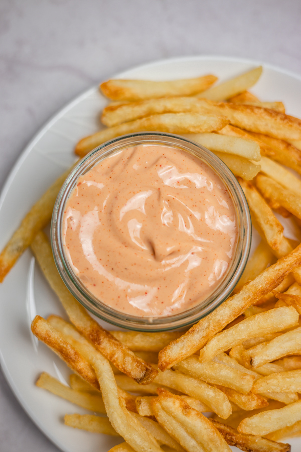

Fry Sauce

You know, when I was first introduced to fry sauce, I was pretty skeptical.
However after trying it I always have some with my fries now, because it's super easy and quick to make.
Ingredients needed:
- 2 Tablespoons of mayonnaise
- 1.5 Tablespoons of ketchup
- 1 Teaspoon of paprika
- 1/2 Teaspoon of cayenne (I enjoy a little kick to my sauce)
How to make:
- All you really need to do is put your ingredients in a small serving dish and mix!
Thats it! You can start dipping your fries in this flavorful sauce right away.